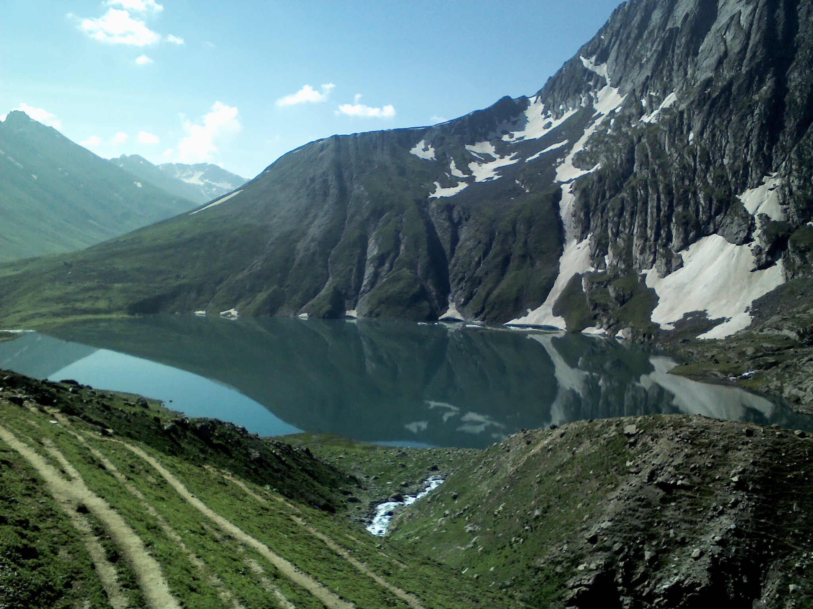

Often hailed as the most beautiful trek in India, the Kashmir Great Lakes (KGL) trek is a spectacular journey through the pristine alpine landscapes of the Himalayas. Over 7 to 8 days, trekkers navigate through a symphony of vibrant green meadows, rugged mountain passes, and stunning turquoise lakes.
Why Choose the Kashmir Great Lakes?
Unlike many other Himalayan treks that offer one or two major highlights, KGL offers a new, breathtaking lake almost every single day. The lakes—including Vishansar, Krishansar, Gadsar, Satsar, and Gangabal—are nestled at high altitudes, reflecting the snow-capped peaks above them.
Best Time to Visit
The window for the KGL trek is relatively short due to heavy snowfall. The best time to embark on this journey is between July and early September. During this time, the snow melts enough to clear the passes, and the meadows bloom with wildflowers.
Fitness Requirements
This is considered a moderate to difficult trek. You will be crossing three major alpine passes, ascending to altitudes of over 13,000 feet. You should be comfortable walking 6-8 hours a day on uneven terrain and have a good cardiovascular fitness baseline.
Ready for the Adventure of a Lifetime?
We organize fully guided, premium trekking experiences for the Kashmir Great Lakes, taking care of permits, high-quality camping gear, and expert guides so you can focus on the views.
View Our KGL Itinerary